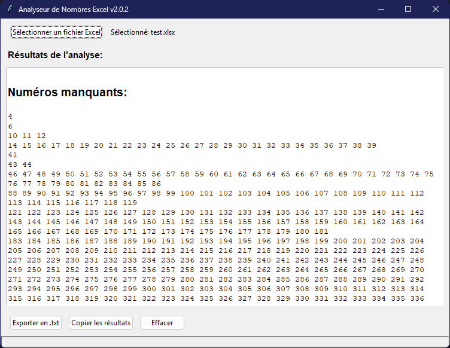

Cet outil simple et efficace analyse un fichier Excel (.xls ou .xlsx) contenant une seule colonne de nombres. Il identifie les plages de nombres manquants et compte les occurrences de chaque nombre.

Fonctionnalités Principales
- Lit les fichiers Excel (.xls ou .xlsx) avec une colonne unique de nombres.
- Trie automatiquement les nombres par ordre croissant.
- Identifie avec précision les plages de nombres manquants à partir de 1.
- Compte les occurrences de chaque nombre, mettant en évidence les doublons.
- Interface graphique utilisateur simple, intuitive et en français.
Téléchargement
Téléchargez la dernière version de l'application directement ici :
Télécharger Analyseur de Nombres Excel exeComment Utiliser l'Application
- Lancez l'application en double-cliquant sur le fichier
Analyseur.de.Nombres.Excel.exeque vous avez téléchargé. - Cliquez sur le bouton "Sélectionner un fichier Excel".
- Choisissez votre fichier Excel contenant les nombres à analyser.
- Les résultats de l'analyse s'afficheront instantanément dans la fenêtre de l'application.
Format du Fichier d'Entrée
Pour un fonctionnement optimal, votre fichier Excel doit respecter les conditions suivantes :
- Être au format
.xlsou.xlsx. - Contenir une seule colonne de nombres.
- Ne pas avoir de ligne d'en-tête dans la colonne des nombres.
Dépannage
- Si l'application ne démarre pas, vérifiez que votre antivirus ne la bloque pas. Vous pourriez avoir besoin d'ajouter une exception.
- Pour tout problème lié au fichier Excel, assurez-vous qu'il respecte scrupuleusement le format requis décrit ci-dessus.
Contribuer et Signaler des Problèmes
Vos contributions, rapports de bogues et suggestions de fonctionnalités sont les bienvenus ! N'hésitez pas à visiter la page des problèmes sur GitHub pour contribuer ou signaler un souci.